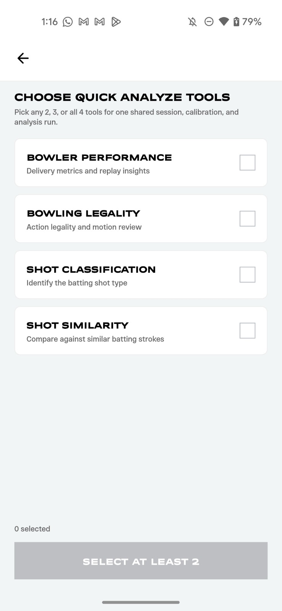
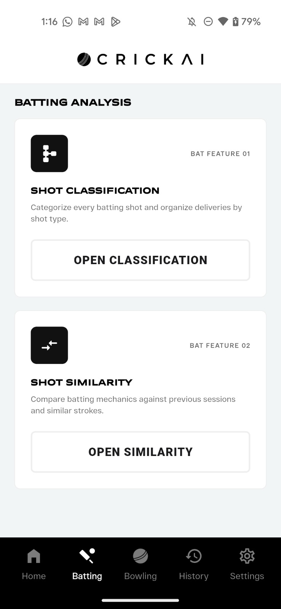
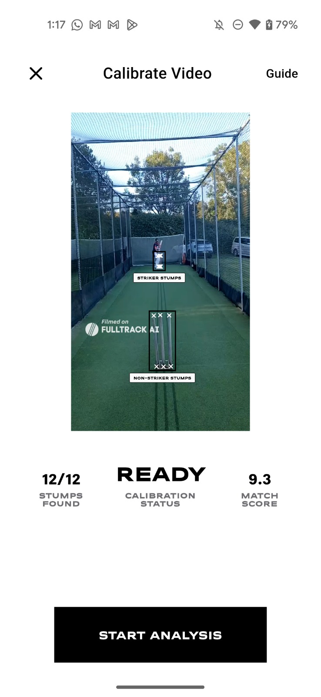
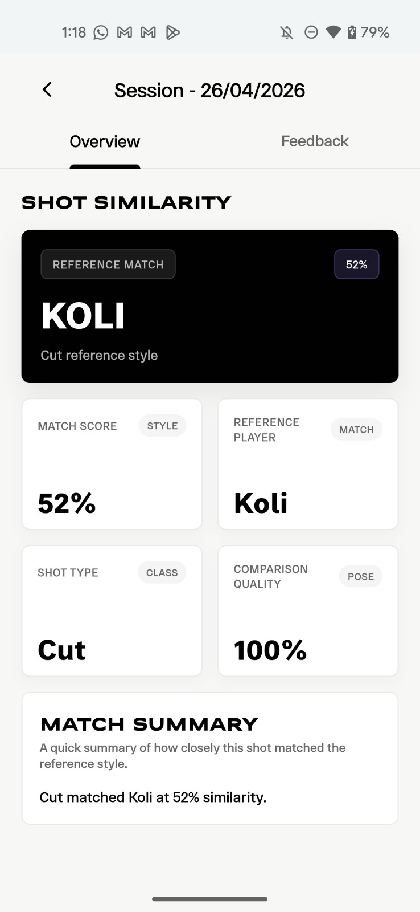
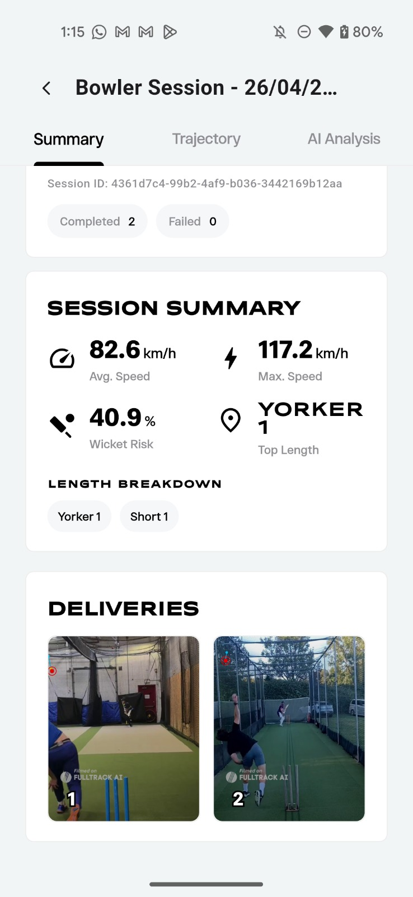

AI-driven bowling and batting analysis — from shot classification and similarity scoring to bowler performance metrics and action legality detection.
Explore Research →Our system combines computer vision, pose estimation, and deep learning to provide comprehensive cricket analysis across batting and bowling.
Categorise every batting shot automatically using pose estimation and deep learning. Identify drives, cuts, pulls, sweeps, and more from match footage.
Compare a batsman's technique against reference players. Our similarity scoring engine measures biomechanical closeness to professional stroke patterns.
Track delivery speed, length, line, and trajectory. Get detailed session summaries with average speed, max speed, and wicket-risk metrics.
Analyse bowling actions for legality using elbow-angle estimation and motion-review algorithms. Detect potential chucking in real-time video.
A native mobile app that lets players and coaches capture, calibrate, and analyse cricket sessions on the field.




